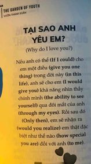

Trung chỉ có cái này để giữ Trang ở lại với Trung thôi.
Trang đồng ý cho Trung tiếp tục làm người yêu của Trang nhé?
Trung không cho Trang chọn không đồng ý đâu. Trung thương Trang lắm! Nếu là vấn đề thời gian thì Trung đã không là Trung của bây giờ nói những lời này với Trang.
Những điều Trung đã nói thì Trung sẽ làm và không nói suông. Trung biết nếu Trang tiếp tục quen Trung thì Trang sẽ thiệt thòi nhiều, Trung hiện tại chưa xứng với Trang. Trung cũng sẽ có những lỗi lầm tiếp tục xảy ra khiến Trang bận tâm, buồn bực. Vậy nên, thay vì chia tay, Trang cứ giận hờn rồi nói với Trung. Trung sẽ phấn đấu để tương lai xứng đáng với Trang. Sẽ rất bất tiện cho Trang nhưng Trung chỉ mong được như vậy. Trang không cần ngọt ngào với Trung, chỉ cần trong lòng Trang luôn thương Trung thôi. Thỉnh thoảng, Trang call với Trung nhé. Nếu lâu lâu Trang muốn gặp Trung, Trung sẽ vào 1 ngày cuối tuần nào đó để gặp Trang. Trang không phải sợ Trung tốn đâu, vì Trung cũng muốn gặp Trang, yêu xa nên Trung nhớ Trang lắm. Nếu Trang hết đồ mỹ phẩm, Trung sẽ cho Trang tiền mua, trong khả năng của Trung. Khi đọc xong, Trang bấm đồng ý rồi đó nhé. Mong Trang nhắn tin với Trung, Trung sợ phải đọc những tin nhắn không đồng ý lắm - điều này khiến Trung run lên do căng thẳng. Mong Trang đọc xong những tâm tình này của Trung, Trang tiếp tục với Trung, thương Trung như những ngày trước nhé. Với Trung, Trung nhói lòng khi xem video tiktok trên kênh của Trang. Trung muốn follow để theo dõi trước khi gửi đến Trang món quà này mà bị Trang chặn mất tiêu. Một lần nữa, cảm ơn Trang vì đã xuất hiện trong cuộc đời Trung.